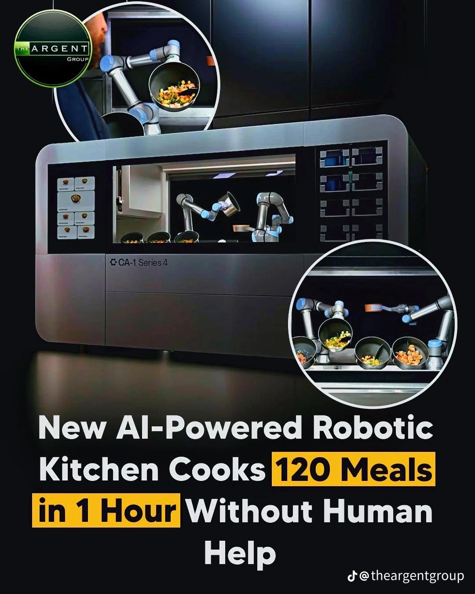

Tam otonom, insansız mutfak — 7/24 açık, siparişten teslimata kendi kendini işleten satış noktası.
KeşfetYeni bir tüketim modeli önce "kim kullanır ki?" diye karşılanır — sonra herkesin hayatı olur. Bunu bu ülkede iki kez gördük:
Getir, mahalle içi küçük depolar (dark store) ve mobil siparişle "dakikalar içinde teslimat" kategorisini kurdu. Model, satın alma davranışını kalıcı olarak değiştirdi: 2022'de 11,8 milyar $ değerlemeye ve günde ~1 milyon siparişe ulaştı. Türkiye'nin hızlı ticaret hacmi bugün yılda ~389 milyar TL (2025, Ticaret Bakanlığı).
1995'te 21 mağazayla kurulan BİM, hard-discount modelini getirdi: az çeşit, özel markalı ürün, düşük operasyon maliyeti, her yerde aynı standart. Bugün 14.000'i aşkın mağaza ve ~721 milyar TL ciroyla pazar lideri; üç indirim zinciri gıda perakendesinin ~%60'ını yönetiyor.
Sıradaki dönüşüm, yemeğin üretiminde. Talep kanıtlı: Türkiye online yemek ve hızlı ticarette günde milyonlarca sipariş işliyor ve büyük şehirler 7/24 yaşıyor. AUTOKITCH, iki kanıtlanmış kaldıracı mutfağa taşır — BİM'in yapısal maliyet avantajı ve Getir'in hız/erişim modeli.
Kesintisiz hizmet veren bir büfe işletmesinin menüsü büyük ölçüde standarttır: tost, sosis, ıslak hamburger, pizza. Buna rağmen bu standardı 7/24 sunmanın işletmeye dört yapısal maliyeti vardır:
7/24 ayakta kalmak için işçiye daha fazla ödemek, vardiya üstüne vardiya kurmak gerekiyor.
Ancak "burada tutar" dediği sınırlı yerlerde açabiliyor — o yerlerde de kira ve maliyetler zaten yüksek.
Sipariş veren, özellikle gece, hep daha fazla ödüyor. Çünkü işletmenin belli bir ciroyu ve belli sayıda insanı döndürmesi şart.
Bu işin içinde şeflik yok — tekrar eden, standart üretim var. Yani bu iş, otonom üretimin en kolay devraldığı iş.
Kadro hesabı İş Kanunu'ndaki 45 saat/hafta sınırından türetilmiştir (7/24 = haftada 168 saat → pozisyon başına ~3,7 kişi). Maaş verileri: eleman.net İstanbul ortalamaları, 2026; işveren maliyeti çarpanı resmî 2026 SGK/vergi oranlarıyla hesaplanmıştır.
İçinde robot mutfak çalışan, dışı pop-up store gibi markalı ve şık giydirilmiş kompakt bir nokta. Teknoloji içeride ve görünmez — müşteri sadece temiz bir marka ve hazır ürün görür. Model tanıdık: insanların "robot Starbucks" diye bildiği robot kahve kioskları (Cafe X, Costa, Artly) yıllardır aynen böyle çalışıyor.
Müşteri ekrandan ya da uygulamadan sipariş verir; ürünü tezgahtan alır. Sipariş, müşteri gelmeden hazırlanır.
Modüller siparişi insan eli değmeden üretir. Robotların görünmesi gerekmiyor — önemli olan ürünün her seferinde birebir aynı çıkması.
Hazırlanan sipariş kilitli bölmeye konur; motorlu kurye şifreyle açar, alır, gider. Paket servis tarafı da insansız.
Final tasarım — gündüzden geceye: nokta hiç kapanmaz, 7/24 çalışır.
Personel gideri olmadığı için gece boyunca 3–5 satış dahi noktayı kârda tutar. Klasik bir şubenin "burada tutmaz" dediği ciro, bu model için yeterlidir.
Kâr marjı düşük olduğu için kimsenin dükkân açmadığı bölgeler — küçük mahalleler, sanayi siteleri, kampüs çeperleri — ilk kez ekonomik olarak hizmet alabilir hâle gelir.
Nokta tutmadıysa yatırım batmaz: ünite sökülür, daha iyi performans beklenen lokasyona taşınır. Klasik şubede bu, dükkân kapatmak demektir.
Sektörün en büyük sorunu eleman bulmak ve elde tutmaktır. Bu modelde işe alım, vardiya, devir ve gece zammı diye bir kalem yoktur.
Bordro olmadığı için aynı kalitedeki ürün, klasik 7/24 işletmeden belirgin şekilde düşük fiyata satılabilir — gece zammı da yoktur.
Her nokta hangi ürünün hangi saatte nerede sattığını raporlar; menü ve yeni nokta seçimi tahminle değil veriyle yapılır.
Üniversite kampüsü, okul, öğrenci yurdu — öğrenci uygulamadan yolda sipariş verir, derse giderken ya da eve dönerken hazır ürününü alır. Gece de açık.
Levent gibi ofis bölgeleri, büyük iş yerleri, plazalar, fabrika kampüsleri — öğle yoğunluğunda sipariş ofise gelir ya da inip alınır; akşam eve giderken sağlıklı bir bowl hazırlatılır.
Gece vardiyası, öğrenci evi, geç saat acıkması — zam yok, kapanış yok; gece de gündüz fiyatına aynı ürün.
Otogar, gar, havalimanı — yolcu trafiğinin 7/24 aktığı, gece de yemek bulmanın zor olduğu noktalar. Kiosk formunda kurulur; sabit gideri düşük olduğu için trafiği doğrudan paraya çevirir.
Cirosu bir restoranı döndürmeye yetmeyen ama talebin var olduğu bölgeler — küçük mahalleler, sanayi siteleri, yurt çeperleri. Personel maliyeti olmadığı için bu noktalar ilk kez kârlı hizmet alanı hâline gelir.
Sahil beldeleri, festival ve fuar alanları, stadyum çevreleri — birkaç aylık yoğunluk için kimse dükkân açıp personel kurmaz; taşınabilir ünite sezon bitince başka noktaya alınır.
"Kitchens of Tomorrow" ekosistem araştırması (Mart 2026), robotik mutfak ve konaklama robotiği alanında 4 kıtada 60'tan fazla şirket haritaladı — son 7 ayda listeye 20 yeni şirket eklendi. Hareketin hedefleri bizim değer önermemizle aynı: hız ve hassasiyet, düşen maliyet, zorlanan sektörde artan talebi karşılamak.

Circus CA-1: 7 m²'de saatte ~120 öğün, 36 malzeme silosu, günde 1 saatten az insan müdahalesi. Ekim 2025'ten beri Almanya'da REWE süpermarketlerinde canlı; yemek fiyatı €3,50–7. "Store" konseptimizin kalbindeki teknoloji sahada çalışıyor.
Liste: "Kitchens of Tomorrow — Mapping the Global Robotic Kitchen & Hospitality Robotics" (Mart 2026) araştırmasının tamamı; bağlantılar şirketlerin resmî siteleridir. Türkiye: otonom mutfak üretimi tarafında henüz yerli oyuncu yok.
Fransa'da bugün yaklaşık 2.500 insansız pizza otomatı sahada ve her yıl 300–500 yenisi kuruluyor. Bu rakam bir şirket beyanı değil; Fransız Ulusal Meclisi'ne verilen 2025 tarihli resmî yanıtta kayda geçti. İnsansız yemek satış noktası Avrupa'da günlük hayatın parçası hâline geldi. Pazar lideri Adial'in makinesi ~€40–50 bine satılıyor; bakım dahil €639/ay leasing seçeneği bile var — saha verisiyle başabaş noktası günde yalnızca 4–7 pizza.
ABD, Japonya, Tayvan ve Güney Kore'de 150'den fazla insansız sıcak yemek istasyonu işletiyor. Bir kase yemeği 45–90 saniyede hazırlıyor; havalimanlarında personelsiz, 7/24 satış yapıyor.
Sadece 1,1 m² yer kaplayan, standart prize takılan burger robotu. Burgeri 6,99 $'a satıyor, üretim maliyeti ~3 $; işletmecilere aylık ~3.000 $ kiralama modeliyle veriliyor. Kanıtladığı şey: çok küçük alan + sıfır personel modeli kârlı çalışabiliyor.
Paris'teki robot makarna mutfağının siparişlerinin %95'i Uber Eats ve Deliveroo üzerinden geliyor; 4–5 m²'lik alanda saatte 400 porsiyon üretiyor. Bizim "önde gel-al, arkada kurye dolabı" kurgumuzun sahada çalışan birebir karşılığı.
Bu örneklerin ortak birim şablonu net: 1–7 m² alan · 0 personel · günde ~1 saat ikmal · 6–12 $ ürün fiyatı. AUTOKITCH'in farkı, bu kanıtlanmış şablonu tek ürüne kilitlenmeden modüler bir platformda ve Türkiye'nin üretim maliyeti avantajıyla kurmak.
"Yemeğin geleceği sadece ne yediğimizle ilgili olmayabilir — onu kimin ya da neyin pişirdiğiyle de ilgili."Kitchens of Tomorrow · Global Robotic Kitchen Map, Mart 2026
Harici / üçüncü taraf örneklerdir (AUTOKITCH'e ait değildir) — kategorinin gerçek ve aktif olduğunu gösterir. Kaynaklar: Kitchens of Tomorrow (Mart 2026) · Assemblée Nationale yazılı soru n.5990 (2025) · Circus Group / Interesting Engineering · Vending Connection · SlashGear · Sifted. Rakamlar yayın tarihlerindeki beyanlardır.